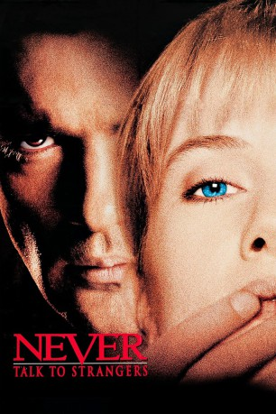

#10725 Spiel mit dem Feuer
Alternativ: Never Talk to Strangers (Englischer Titel)
 
 IMDB-Wertung: 5.2 / 10
IMDB-Wertung: 5.2 / 10  Metascore: 0
Metascore: 0 
Kriminalpsychologin Sarah soll feststellen, ob der brutale Serienmörder Cheski geistesgestört ist. Zur selben Zeit tritt der Sicherheitsexperte Toni in ihr Leben. Der Latino verführt sie zu wilden Spielen. Plötzlich erhält Sarah seltsame Pakete: In einem liegt ihre tote Katze. Dann merkt sie, dass Toni ihr nachspioniert…
Jahr: 1995
Dauer: 85 Minuten
FSK: 16
Land: USA Studio: TriStar PicturesTonspuren:
Untertitel:
Auflösung: 1080p (1920x1080) Größe: 6707 MB
Genre: Thriller, Drama, Krimi, Liebe
Regisseur: Peter Hall
Drehbuch: Lewis A. Green, Jordan Rush
Soundtrack: Pino Donaggio
Darsteller:
Datei: X:\1995\Spiel mit dem Feuer (1995, FSK16, 1920x1080).mkv seit 22.02.2019
Festplatte: Gemischt-01+Anime
 Es gibt insgesamt 85 Filme in der Gruppe '1995'
Es gibt insgesamt 85 Filme in der Gruppe '1995'